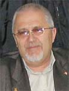

| Верою познаем Бога невидимого |
"Верою
познаем,
что...из невидимого произошло видимое" (Евреям 11:3) "Сын Божий "…есть образ Бога Невидимого, рожденный прежде всякой твари" (Колос.1:14) | |
|  | "Слухом услышите и не вразумеете; и очами смотреть будете и не увидите" (Исайя 6:9). Так предрекал пророк Исайя всему еврейскому народу еще задолго до рождения Господа Иисуса. Но кто ж его тогда услышал? Прошло несколько тысячелетий, согласно плану Божьему Иисус родился, вырос, достойно Господу пронес и исполнил до конца Свою Божественную миссию, пребывал в окружении элиты человеческой - с апостолами Своими, в том числе и с Фомой, был распят, умерщвлен и воскрес и что же это прибавило веры тому же Фоме? Да нисколько иначе не пришлось бы Иоанну свидетельствовать: " Иисус говорит ему: ты поверил, потому что увидел Меня; блаженны невидевшие и уверовавшие". (Иоанна 20:29). |
Между тем, во 2-м Послании Коринфянам, 4 главе, 16 -18 стихах сказано: "Посему мы не унываем; но если внешний наш человек и тлеет, то внутренний со дня на день обновляется. Ибо кратковременное легкое страдание наше производит в безмерном преизбытке вечную славу, когда мы смотрим не на видимое, но на невидимое: ибо видимое временно, а невидимое вечно". В этом отрывке Апостол Павел дает нам такой бесценный совет: "Не смотри на видимое, а смотри на невидимое". Ибо сегодня нам с вами хорошо известно: все, что приходит в нашу жизнь и влияет на нее, имеет определенную предысторию в невидимом мире. Блаженны невидевшие и
уверовавшие
Но, человек не видит невидимого, человек не видит для него несуществующего, наконец человек не видит того, чего не хочет видеть. Верующий считает, что Бог невидим для живых, атеист же - что Бог не существует вообще. Верующий полагает, что атеист попросту не желает видеть Бога, а атеист отвечает подозрением, что верующий галлюцинирует, видит только то, чего ему очень хочется видеть. О, если бы! Ведь Бог - галлюцинация был бы намного более удобен, прост и не вызывал бы всех тех проблем и напряжений, которые вызывает в настоящей религиозной жизни Бог невидимый. Правота атеизма в том, что религия-галлюцинация действительно существует (далеко за примером ходить не нужно, вспомните последователей церкви "Аэропорт"). Но не всякая религия есть галлюцинация, и не всякая галлюцинация - атеизм. Ведь известно, что вера в невидимую силу зла и небытия объединяет многих верующих с неверующими. Напротив, многие верующие и неверующие объединены трезвым отношением к миру. Вот и Фома "неверный", не поверивший в воскресение Иисуса и пожелавший лично увидеть воскресшего Учителя и Его раны. Он не доверял другим апостолам (и, может быть небезосновательно) ведь для Фомы апостолы - это всего лишь дюжина человек, из которых неформальный лидер (Пётр) трижды отрекся (считай предал) Христа, а формальный казначей Христа (Иуда) не только предал, но и продал (т.е. - у всех есть определенные нравственные пороки). И Фома выбирает на превый взгляд странный, но единственно мудрый способ проверки: самолично увидеть раны Христа. Он хочет увидеть то, что очевидно для других и во что сам не верит.Чтобы верить, ему нужно увидеть чудо. Но, проблема в том, что очень мало проку и много соблазнов таится в такой вере, которая не может без чуда. Примечательно, что Сам Господь Иисус, по этому поводу сказал: "Блаженны невидевшие и уверовавшие" (Иоанна. 20:29). Только лишь вера даёт нам возможность видеть Бога, ставшего человеком, воскресшего и вознёсшегося, вера даёт нам видеть раны Божии. Ведь не вознесение, а именно воскресение сделало Иисуса каким-то странным, необычным, не вполне видимым (длдя Фомы и иже с ним) во всяком случае. Теперь Его видели только тогда, когда Он Сам хотел, чтобы Его видели. Почему же мы не можем увидеть Бога?
Давайте представим себе, что на плоском куске бумаги находится несколько человек. Эти люди, как и поверхность листа - двухмерные, у них есть только длина и ширина, но нет высоты, нет объема, и поверхность листа бумаги это пределы их реального мира. Могут ли они увидеть вас, находящихся рядом с листом? Нет, конечно. Они видят только то, что есть на бумаге (т.е. - в их мире). У них нет восприятия глубины, объема. А теперь, представьте, что вы дотрагиваетесь своим пальцем до бумаги или до этих двухмерных человечков. Как вы полагаете, могут ли они видеть вас? Ответ: они никогда не смогут увидеть вас полностью, но они могут почуствовать и даже увидеть кончик вашего пальца, и только в той части его, которая проникла в их мир.Так существуете ли вы, как единое целое, а не только кончик вашего пальца для этих двумерных людей, а главное - как же вы выглядите для них и как они вас воспринимают? Это, безусловно очень примитивная и упрощенная аналогия, но она, на мой взгляд, хоть немного, но проливает свет на нашу земную ситуацию и объясняет возможность и невозможность одновременно общения с Богом. Бог безусловно существует, но вне наших измерений, вне нашего четырехмерного пространства (ширина, длина, высота, время). Он может существовать вне времени и пространства в том смысле, в каком мы знаем об этих категориях. Поэтому, нам трудно "увидеть" Его. Мы для Бога - как те плоские люди на двухмерной бумаге. Мы не видим того, что пребывает даже в пятом измерении, а Бог существует может быть в каком-то шести или даже десятимерном пространстве, во всяком случае, безусловно, за пределами нашего пространственно-временного континиума и понимания. Как же нам тогда узнать и признать такого Бога? Точно так же, как "плоские люди" на бумаге не могли бы узнать о вас, если бы вы не дотронулись до них пальцем, так и мы не можем обнаружить Бога, пока он Сам того не пожелает и не откроет нам себя. Он должен "дотронуться до бумаги" нашего мира. Он должен опуститься в наше пространство с его измерениями. Вот так. Но все это лишь наши досужие рассуждения. А что же по этому поводу говорится в самом Писании? Однозначного ответа на сей сакраментальный вопрос я отыскать так и не сумел. Но, судите об этом сами. О возможности и невозможности Боговидения
Из текстов, отрицающих возможность Боговидения, необходимо прежде всего привести следующее место Исхода (33:20-23), где Бог говорит Моисею: "Лица Моего не можно тебе увидеть, потому что человек не может увидеть Меня и остаться в живых". Бог дает пройти Своей славе, одновременно закрывая стоящего в расселине скалы Моисея Своей десницей "...доколе не пройду. И когда сниму руку Мою ты увидишь меня сзади." Таким образом, в этом месте Библии говорится о том, что даже пророк Моисей видит Его лишь сзади; он так и не смог увидеть Лица Его. В других местах Ветхого Завета (Судей 6:22; 13:22; Исайя 6:5 и др.) мы видим то же утверждение: нельзя увидеть Бога и остаться живым. Именно по этой причине, позже, Бог посылает Гедеону Ангела Господня для совершения испрашиваемого знамения. Ангел чудесным образом вызывает огонь из камня и превращает мясо жертвеннго козленка и сырые опресноки в готовую еду, после чего Гедеон восклицает: "...Владыка Господи!...я видел Ангела Господня лицем к лицу" (Кн. Судей 6:22). В 13 главе 22 стиха Книги Судей описан аналогичный случай с Маноем и его женою, которые после жертвоприношения в пламени жертвенника также увидели Ангела Господня. В 19 главе Исхода сказно, что когда Бог сходит на гору Синай в густом облаке, среди огня: "Моисей говорил и Бог отвечал ему голосом, а народ в это время должен был остаться в стороне, чтобы не умереть" (Исх. 19:19-21). И в то же время, когда пророку Самуилу в Силоме является Бог, он общается с Господом, но оказывается, что: "Господь ...открыл себя Самуилу в Силоме через слово Господне" (1Цар.3:21). А что же говорит Новый Завет об этом? Находим ли мы в Библии примеры того, как Бог "касался бумаги" нашего мира? А представьте себе на секунду, что Божий "перст" прикоснулся к нашему миру в человенческой и божественной одновременно личности, известной всему миру, как Иисус Христос. Если же мы - "плоские люди", тогда вполне разумно предположить, что многомерный Бог-Творец вошел в наш четырехмерный мир, воплотившись в образ человека. Он, таким образом и открыл Себя нам. -Ась? Ну так вот, Новозаветные тексты еще более чем Ветхозаветные категоричны в смысле отрицающем возможность человеку увидеть Бога. Так, например, в 1-ом Тимофею 6:16 святой апостол Павел говорит: "Единый имеющий, бессмертие, Который обитает в неприступном свете (как тут не вспомнить о многомерном пространстве), Которого никто из человеков не видел и видеть не может". Здесь можно увидеть, что идея бессмертия как бы сочетается с идеей Божественной непознаваемости. Он (Господь) для смертного существа неприступен. Св. апостол Иоанн (1Иоан.4:12) говорит: "Бога никто никогда не видел". Мы находим, что почти то же самое выражение повторяется в Евангелии от Иоанна(1:18): "Бога не видел никто никогда", но здесь апостол дополняет свою мысль следующим образом: "Единородный Сын, Сущий в недре Отчем, Он явил " (или, вероятнее всего, объяснил, раскрыл). Ибо греческому слову (Logos), по-видимому, свойственно выражать, раскрывать природу Отца. И далее в его Евангелии (6:46) читаем: "Это не то, чтобы кто видел Отца, кроме Того, Кто есть от Бога; Он видел Отца". Ту же мысль выражают Матфей и Лука: (Матф.11:27 и Лук.10:22). "Никто не знает Сына, кроме Отца, и Отца не знает никто, кроме Сына и кому Сын хочет открыть". Эти последние тексты, ограничивают видение и познание Бога внутренними соотношениями между Отцом и Сыном - только Они Одни знают друг друга; одновременно это приводит нас к мысли, что познание Бога может быть даровано и сообщено смертным людям единственно только по желанию Единородного Сына Его. Последнее ставит нас перед целым рядом библейских текстов, утверждающих возможность опосредованного Боговидения. Ибо даже описания явления Бога в Ветхом Завете обычно сопровожджается явлением Ангела Господня, как бы некоего медиатора (посредника), посредством которого Бог становится доступным человеку (Быт.16:7-14; вся 18 гл. и др.). Исайя говорит, что даровав дому Израилеву благодать Его, Он: "...во всякой скорби не оставлял их, и Ангел лица Его спасал их" (Исайя.63:7-9). Бог всегда остается неопознанным, но Ангел знаменует Его личное присутствие, как в рассказе об Иакове, борющимся с Богом (Быт.32:24-30). Неизвестный (с кем ночью боролся Иаков) не хочет раскрывать Своего имени, однако это не мешает Иакову сказать: "Я видел Бога лицем к лицу и сохранилась душа моя". И он называет Пенуэл (что означает лицо Бога) место, где явился ему Бог. Хотя не сложно понять, что Иаков боролся и получил имя Израиль не с самим Богом, а лишь с Ангелом Его и Господь хотел лишь показать ему, что мол, не боись ибо: "...если ты боролся с Богом, то и человеков одолевать будешь (Бытие 32:28). Согласно библейским текстам, надо полагать, что единственными из смертных, кто видел Бога лицем к лицу были прародители наши Адам и Ева; но, меня лично, это не удивляет, ибо во время такого общения они еще были безгрешны и пребывали в раю (считай в другом, недоступном нам, измерении). Более удивительно в этом смысле общение пророка Моисея с Господом. В отличие от вышесказанного о Моисее, в 33 главе Исхода говорится: "И говорил Господь с Моисеем лицем к лицу, как бы говорил кто с другом своим; и он (Моисей) возвращался в стан" (Исх. 33:11). Но это, пожалуй, единственный и уникальный случай - об уникальности этого далее говорится во Второзаконии: "И не было более в Израиля пророка такого, как Моисей, которого Господь знал лицем к лицу" (34:10). Это была личная встреча, с личным Богом, хотя и окутанная для нас тайной, как на горе Синай был Господь окутан мраком. "Когда сходил Мисей с горы Синая... то Моисей не знал, что лице его стало сиять лучами от того, что Бог говорил с ним. И увидел Моисея Аарон и все сыны Израилевы, и вот, лице его сияет, и боялись подойти к нему" (Исход34:29-30). Лицо Моисеево, сияло отражением лица Бога настолько, что когда Моисей прекращал общаться с сынами Израиля он вынужден был прикрывать лице своле покрывалом, которое снимал, только когда вновь общался с Богом: "Когда же входил Моисей пред лице Господа, чтобы поговорить с Ним, тогда снимал покрывало, доколе не выходил" (Исход 34:34). Итак, лицо Господа нашего чистое и светозарно, о чем сказано в Числах: "Да призрит на тебя Господь светлым лицем Своим..." (Числ.6:25). О свете лица Божия нам прямо указывают и Псалмы: "Яви нам свет лица Твоего, Господи!" (Пс.4:11). В книге Иова, испытуемый Богом праведник в надежде воскресения выражает свою уверенность в том, что он увидит Бога собственными своими глазами: "А я знаю, Искупитель мой жив, и Он в последний: день восставит из праха распадающуюся кожу мою сию, и я во плоти моей узнаю Бога. Я узрю его Сам, мои глаза, не глаза другого, увидят Его..." (Иов.19:25-27). И далее, в 42 главе книги Иова о раскаявшемся Иове говорится так: "И отвечал Иов Господу и сказал: ...Я слышал о Тебе слухом уха; теперь же глаза мои видят Тебя; Поэтому я отрекаюсь и раскаиваюсь в прахе и пепле."(Иов.42:1,5,6). Но, не думаю, что это место прямо указывает на общение Иова со Господом лицем к лицу, скорее это было лишь видение испытуемому и раскаявшемуся Иову. А святой апостол Иоан Богослов, передавая нам благовестие, которое он слышал от Самого Господа Иисуса, возвещает прямо: "Бог есть свет, и нет в Нем никакой тьмы" (1 Иоанна 1:5). В Евангелии от Иоанна отмечено, что Сам Господь Иисус говорил однажды: "И видящий Меня видит Пославшего Меня. Я свет и пришел в мир, чтобы всякий верующий в Меня не оставался во тьме." (Иоанна 12:45,46). И далее, еще более ценное для нас с Вами откровение: "Если же ходим во свете, подобно, как Он во свете, то имеем общение друг с другом, и Кровь Иисуса Христа, Сына Его, очищает нас от всякого греха" (Иоанна 1:7). Вот так! Если в Ветхом Завете Божественная Личность при общении со смертными обычно представлена Ангелом Его ("Ангел лица Его", подтверждающий присутствие Бога), то в Новом Завете мы узнаем о существовании и часто видим указания на присутствие ангелов человеческих личностей.Так, в Евангелии от Матфея пересказаны слова Иисуса следующим образом: "Смотрите, не презирайте ни одного из малых сих; ибо говорю вам, что Ангелы их на небесах всегда видят лице Отца Моего Небесного" (Мф.18:10). Как мы можем понять из Библии в Новозаветное время ситуация в общении со Господом уже несколько иная. Так, в Послании к евреям (Евр. главы 1 и 2), говорится о том, что Бог общается с людьми уже не через Ангелов Лица Своего, а через Сына Своего, который превосходнее всех ангелов, ибо сказно: "...и да поклонятся Ему все Ангелы Божии" (Евр.1:6). Если в Ветхом Завете мы видим, что людям с неповинными руками, чистым сердцем и не божившимся ложно дано обещание Господа лишь именовать их родом, ищущим лица Бога Иакова (Пс.23:4-6), то Евангелие от Матфея уже прямо утверждает, что "блаженны чистые сердцем, ибо они Бога узрят" (Мф.5:8). Апокалипсис же говорит об избранных следующее: "И узрят лице Его, и имя Его будет на челах их" (Откр.22:4). И далее вновь чрез Ангела Своего и посредством Иоанна Богослова (стих 7) сказаны очень актуальные для нас с вами слова: "Се, гряду скоро: блажен соблюдающий слова пророчества книги сей". Покажите мне Бога
Существует давняя притча о старом, одиноком, но очень богобоязненном земледельце, который жил в маленьком домике возле леса. Рядом с его домиком стоял сарай. Однажды, в очень холодную зимнюю ночь, вдруг стая птиц начала ломиться в окна его теплого домика, пытаясь спастись от наружного смертельного холода. Тогда старый фермер пожалел птиц, вышел на улицу и открыл двери своего сарая. Внутри сарая было тепло. Он махал руками и кричал птицам, показывая им, что им нужно залететь в сарай, где они спасутся от холода. Но они все летали вокруг и не понимали его. В тот момент отчаявшийся в своих попытках старый человек пожелал стать одной из птиц. Если бы он стал птицей, тогда он смог бы объясняться на птичьем языке и привести других птиц в сарай, чтобы они избежали смерти. И в этот самый момент, отчаявшийся старый земледелец понял, зачем приходил на землю Господь наш Иисус. При всем его большом желании, этот старый человек не смог бы превратиться в птицу, но всеблагий Бог, по желанию своему смог стать человеком и прикоснуться к нашему миру. Он возжелал стать той самой птицею (членом человеческого сообщества), которая лучше сможет понять, чтобы затем, пожертвовав собою - простить. И мы знаем, что Он, Господь наш так и сделал: "Ибо так возлюбил Бог мир, что отдал Сына Своего Единородного, дабы всякий верующий в Него, не погиб, но имел жизнь вечную. Ибо не послал Бог Сына Своего в мир, чтобы судить мир, но чтобы мир спасен был чрез Него" (Иоан.3:16-17). Вот, так !
И алилуйя нашему Господу Иисусу Христу. И еще: помните всегда, что было сказано святым Апостолом Петром в (1-е Пет. 5:10) специально для нас с вами: "Бог же всякой благодати, призвавший нас в вечную славу Свою во Христе Иисусе, Сам, по кратковременном страдании вашем (читай после искушения вашего) да совершит вас, да утвердит, да укрепит , да соделает непоколебимыми. Ему слава и держава во веки веков. Аминь". |
|
Сие кратко написал для вас, ваш брат во Христе Иисусе Владимир Заплишный. Аминь! 11 Дня, января месяца, 2009 |